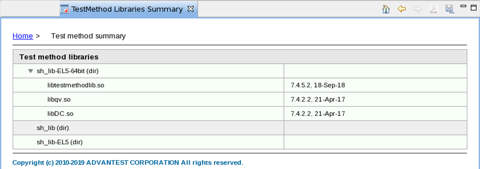

Test method libraries reports
Test method libraries report provides the test method libraries used in the test program.
The test method libraries report provides the following information:

The report displays the test method libraries and the corresponding SmarTest revisions.
Functional changes
- Introduced in TP360 3.10.4